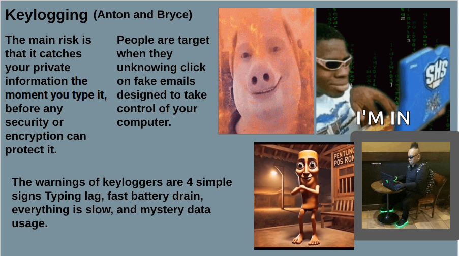

What This Artifact Is
This artifact is an imformation slide that gives various bits of information about the dangers of keylogging. It shows how hackers can get into your computer and log every key that was pressed to find passwords and other personal information.
Screenshot or Visual

Project Link
The Internet, Cloud, Cybersecurity, or Privacy Concept Explained
The main concept that this artifact teaches is to mainly avoid suspicous phishing links and that if you do click on them things such as keylogging can happen..
The Risk or Threat Involved
If you are affected by keylogging hackers will get a record or transcript of every key that is pressed on your computer, using this they can figure out various things such as passwords and pins.
At Least Two Defenses
- Defense 1: Multi Factor Authentification - This esentially means that there are two steps to logigng into an account, this can protect your data if your password gets stolen.
- Defense 2: Anti-Virus - This is anti malware software that protects your computer from cyber attacks.
Why Human Choices Matter
Human decisions are greatly part of this defense because humans can make choices that either protect or give up vital information. An example of this is knowing when not to click on suspicious links.